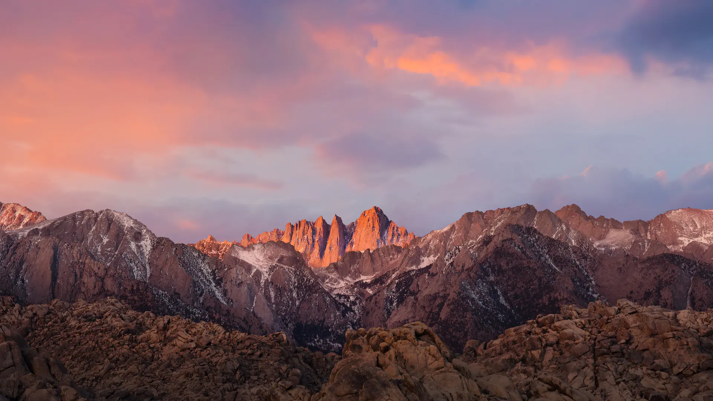

Sierra
September 20, 2016

macOSシリーズの13番目で、バージョンナンバーは10.12。名前は、カリフォルニア州にあるシエラネバダ山脈から付けられたが、「Sierra」はスペイン語で「山脈」を指す。
OS X El Capitanの後継バージョンとして、2016年9月20日に無料でリリースされた[1]。
September 20, 2016
macOSシリーズの13番目で、バージョンナンバーは10.12。名前は、カリフォルニア州にあるシエラネバダ山脈から付けられたが、「Sierra」はスペイン語で「山脈」を指す。
OS X El Capitanの後継バージョンとして、2016年9月20日に無料でリリースされた[1]。